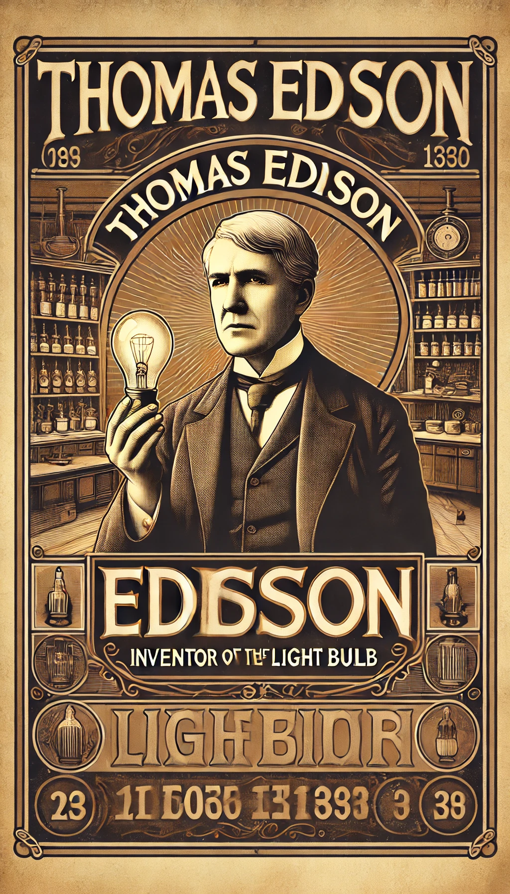

History
The Edison Phonograph, invented in 1877, was the first device to successfully record and play back sound. This revolutionary invention paved the way for modern audio technology.
Specifications
- Recording Medium: Wax cylinder
- Playback: Acoustic horn
- Dimensions: 20 x 15 x 10 inches
- Weight: 25 pounds
Development Timeline
- 1877: First successful recording
- 1878: Commercial release
- 1880: Improvements in recording quality
- 1890: Introduction of the Amberol cylinder